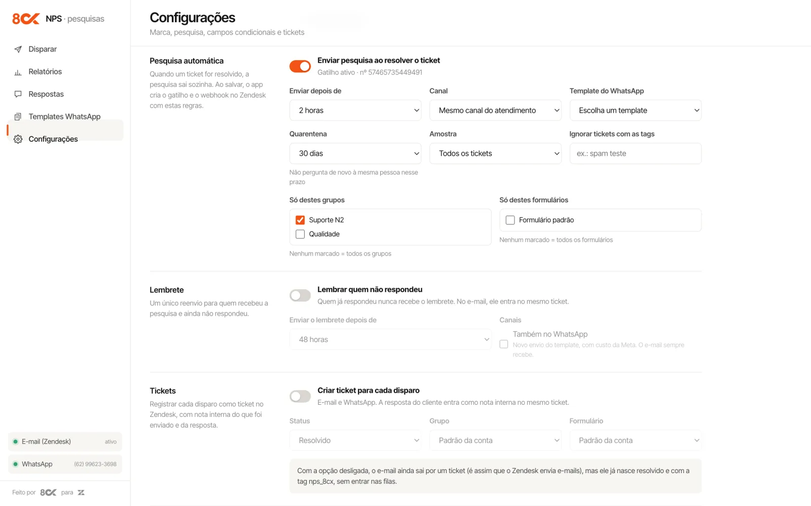
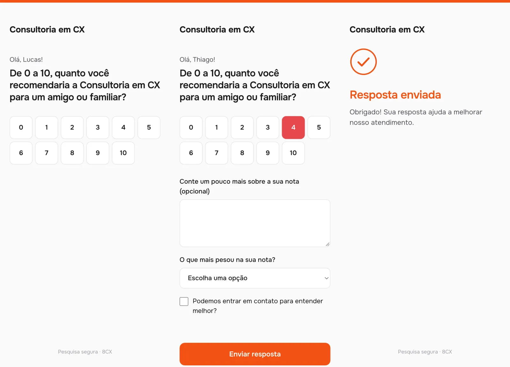
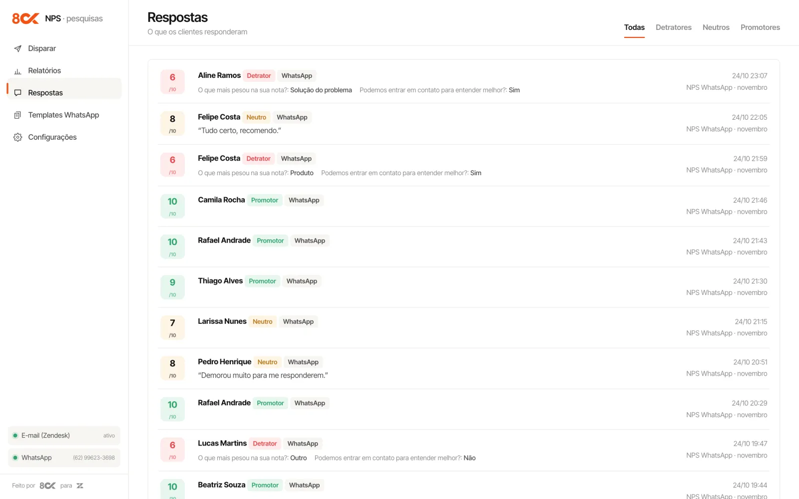

NPS 8CX
Dispare a pesquisa no fim de cada atendimento, por e-mail ou WhatsApp, e veja a nota voltar para o próprio ticket. Relatórios por canal, agente e motivo, sem sair do Zendesk.

A pesquisa sai sozinha quando o ticket é resolvido
E-mail pelo Zendesk e WhatsApp oficial
NPS clássico, estrelas ou emoji, com campos extras
Relatório pronto para levar à reunião
Pesquisa de NPS que sai sozinha quando o ticket é resolvido.
Configure uma vez e esqueça.
Quando o ticket é resolvido, o app espera o tempo que você definir e envia a pesquisa pelo mesmo canal do atendimento.
- Atraso configurável depois da resolução
- Quarentena: a mesma pessoa não recebe de novo antes do prazo
- Filtros por grupo, formulário e tags
- Lembrete para quem não respondeu

Responder leva menos de um minuto.
A pesquisa abre no celular com a sua marca. Para quem dá nota baixa, o app pergunta o motivo e se pode entrar em contato.
- Nota de 0 a 10, estrelas ou emoji
- Campos condicionais por faixa de nota
- Comentário livre e pedido de contato
- Página segura, sem login

Cada nota tem nome, contexto e dono.
A resposta entra como nota interna no ticket, com tags de promotor, neutro ou detrator. Fica fácil criar gatilhos para tratar detratores.
- Nota, comentário e motivo no ticket original
- Tags nps_promotor, nps_neutro, nps_detrator
- Lista de respostas com filtro por grupo
- Recuperação de detratores acompanhada no relatório

Relatórios
NPS, nota média, funil de envio, abertura, clique e resposta.
Funil por canal
Compare e-mail e WhatsApp do envio à resposta.
Motivos
O que mais pesou na nota de cada grupo.
Mapa por estado
Onde estão os promotores e os detratores.
Disparo manual
Suba uma planilha ou escolha clientes do Zendesk.
Templates de WhatsApp
Use os templates aprovados pela Meta com o botão da pesquisa.
A 8CX instala, configura e acompanha.
Conversa
Entendemos a sua operação e mostramos o NPS 8CX funcionando com dados de exemplo.
Implantação
Instalamos o app no seu Zendesk e configuramos as regras com o seu time.
Hypercare
Duas semanas de acompanhamento depois do go-live para ajustar o que for preciso.
Vamos conversar sobre o NPS 8CX?
Clique e fale com a 8CX no WhatsApp. A mensagem já vai escrita:
“Olá! Vim do site da 8CX e queria saber mais sobre o NPS 8CX.”conversa ↗